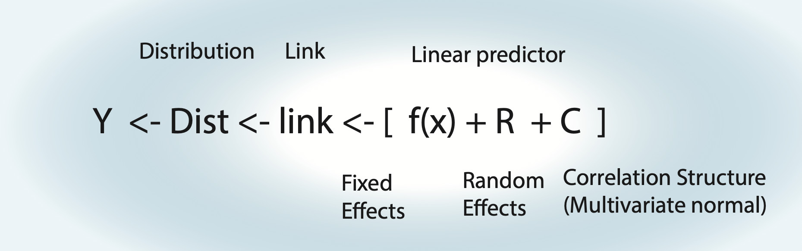
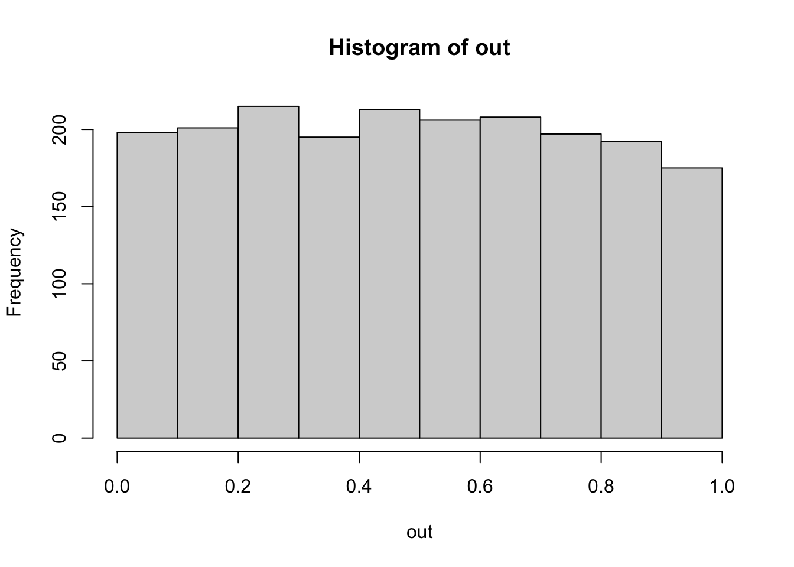

11 Summary and concluding thoughts
11.1 Reminder: Modelling Strategy
Things to note:
- For an lm, the link function is the identity function.
- Fixed effects \(\operatorname{f}(x)\) can be either a polynomial \(\left( a \cdot x = b \right)\) = linear regression, a nonlinear function = nonlinear regression, or a smooth spline = generalized additive model (GAM).
- Random effects assume normal distribution for groups.
- Random effects can also act on fixed effects (random slope).
- For an lm with correlation structure, C is integrated in Dist. For all other GLMMs, there is another distribution, plus the additional multivariate normal on the linear predictor.
Strategy for analysis:
- Define formula via scientific questions + confounders.
- Define type of GLM (lm, logistic, Poisson).
- Blocks in data -> Random effects, start with random intercept.
Fit this base model, then do residual checks for
- Wrong functional form -> Change fitted function.
- Wrong distribution-> Transformation or GLM adjustment.
- (Over)dispersion -> Variable dispersion GLM.
- Heteroskedasticity -> Model dispersion.
- Zero-inflation -> Add ZIP term.
- Correlation -> Add correlation structure.
And adjust the model accordingly.
Packages:
baseR.{R}:lm.{R},glm.{R}.lme4.{R}: mixed models,lmer.{R},glmer.{R}.mgcv.{R}: GAM.nlme.{R}: Variance and correlations structure modelling for linear (mixed) models, usinggls.{R} +lme.{R}.glmmTMB.{R}: Generalized linear mixed models with variance / correlation modelling and zip term.
11.2 Thoughts About the Analysis Pipeline
In statistics, we rarely use a simple analysis. We often use an entire pipeline, consisting, for example, of the protocol that I sketched in chapter @ref(protocol). What we should constantly ask ourselves: Is our pipeline good? By “good”, we typically mean: If 1000 analyses are run in that way:
- What is the typical error of the estimate?
- What is the Type I error (false positives)?
- Are the confidence intervals correctly calculated?
- …
The way to check this is to run simulations. For example, the following function creates data that follows the assumptions of a linear regression with slope 0.5, then fits a linear regression, and returns the estimate
getEstimate = function(n = 100){
x = runif(n)
y = 0.5 * x + rnorm(n)
fit = lm(y ~ x)
x = summary(fit)
return(x$coefficients[2, 1]) # Get fitted x weight (should be ~0.5).
}The replicate function allows us to execute this 1000 times:
set.seed(543210)
out = replicate(1000, getEstimate())Plotting the result, we can check whether the linear regression is an unbiased estimator for the slope.
hist(out, breaks = 50)
abline(v = 0.5, col = "red")
“Unbiased” means that, while each single estimate will have some error, the mean of many estimates will spread around the true value.
Explicitly calculating these values
Bias
mean(out) - 0.5 # Should be ~0.[1] -0.001826401Variance / standard deviation of the estimator
sd(out)[1] 0.3587717To check p-values, we could run:
set.seed(12345)
getEstimate = function(n = 100){ # Mind: Function has changed!
x = runif(n)
y = rnorm(n) # No dependence of x! Identical: y = 0 * x + rnorm(100).
fit = lm(y ~ x)
x = summary(fit)
return(x$coefficients[2, 4]) # P-value for H0: Weight of x = 0.
}
out = replicate(2000, getEstimate())
hist(out) # Expected: Uniformly distributed p-values. -> Check.
mean(out < 0.05) # Expected: ~0.05. But this is NO p-value... Check H0/H1![1] 0.0515# Explanation of syntax: Logical vectors are interpreted as vectors of 0s and 1s.To check the properties of other, possibly more complicated pipelines, statisticians will typically use the same technique. I recommend doing this! For example, you could modify the function above to have a non-normal error. How much difference does that make? Simulating often beats recommendations in the books!
11.3 Advanced topics
Bayesian estimation as a good general platform
- shrinkage
- p-value / df problems less visible